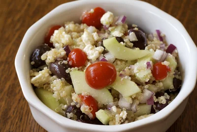

Greek Quinoa Salad

Description
A nutritious, tasty and easy to prepare salad from
https://www.makebetterfood.com/recipes/greek-quinoa-salad/.
Ingredients
- Quinoa
- 1 cup quinoa
- 2 cups water
- 1/4 teaspoon salt
- Salad
- 1 cup grape tomatoes, halved
- 1/4 teaspoon salt
- 1 medium cucumber
- 1/2 small red onion
- 1/2 cup pitted kalamata olives, or to taste
- 4 ounces feta cheese
- Vinaigrette
- 2 teaspoons red wine vinegar
- 2 teaspoons fresh oregano, chopped OR 1 teaspoon dried oregano
- 1 teaspoon lemon juice
- 1/4 teaspoon salt, or to taste
- 1/4 teaspoon fresh ground black pepper, or to taste
- 5 tablespoons extra-virgin olive oil
Steps
- Using a fine mesh strainer, rinse quinoa under cold water.
- Bring quinoa, water, and salt to a boil in a medium saucepan over
medium heat. Boil for 5 minutes and then reduce heat to a simmer.
Cook until quinoa is soft, about 15 minutes. Remove from heat
and fluff with a fork. Allow quinoa to cool to room
temperature.
- Transfer quinoa to a large bowl.
- Cut grape tomatoes in half and season lightly with salt. Place
in a colander over the sink to let excess water drain.
- Peel cucumber, cut into quarters lengthwise, thickly slice,
and add to colander with tomatoes. Season with additional salt
and toss to combine. Let rest.
- Dice onion and place in a large bowl with quinoa. Add olives.
- Gently press excess water from tomatoes and cucumbers and add
to bowl.
- Crumble feta cheese over vegetables.
- In a small mixing bowl or measuring cup, whisk together vinegar,
lemon juice, and spices.
- Add the olive oil to the vinegar mixture in a slow, steady stream
while whisking. Whisk vigorously to combine.
- Add the vinaigrette to the salad and toss to combine. Taste and
add additional salt or pepper as desired. Serve immediately.